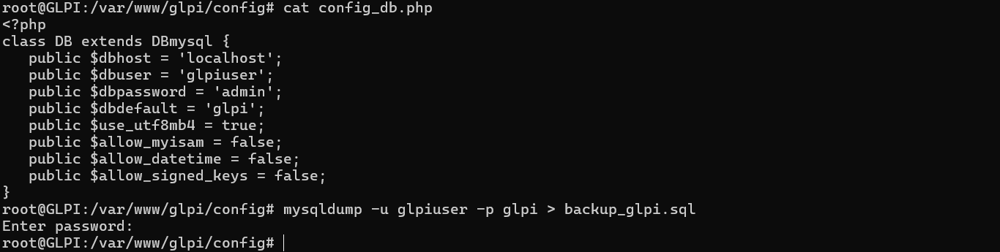
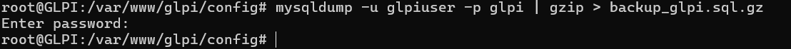
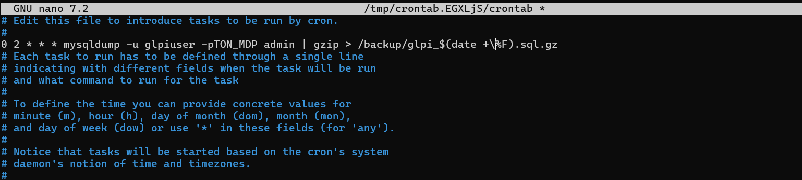

Sauvegarder et restaurer une base de données.
Avoir un serveur GLPI opérationnel.
La sauvegarde des données de la base MySQL de GLPI est indispensable. Cela peut se faire manuellement ou de manière automatique en planifiant les sauvegardes.
Dans le serveur, regarder le fichier :
/var/www/glpi/config/config_db.phpOn y trouvera :
mysqldump -u utilisateur -p nom_base > sauvegarde_glpi.sqlCompressé (Recommandé)
mysqldump -u utilisateur -p nom_base | gzip > backup_glpi.sql.gz

crontab -eAjouter :
0 2 * * * mysqldump -u utilisateur -pTON_MDP nom_base | gzip > /backup/glpi_$(date +\%F).sql.gz
La sauvegarde est enregistrée exactement là où on a tapé la commande.
mysql -u utilisateur -p nom_base < backup_glpi.sqlou avec gzip :
gunzip < backup_glpi.sql.gz | mysql -u utilisateur -p nom_base